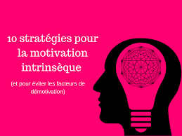

La motivation intrinsèque

La motivation intrinsèque est une attitude qui s’explique par nos désirs internes ou intrinsèques.
En d’autres termes, cette motivation repose sur l’adoption d’un comportement qui n’est pas imposé par autrui. Elle provient de vous-même et non d’éléments extérieurs, tels que les éloges ou autres compensations.
La théorie de la motivation intrinsèque a tout d’abord été fondée sur les besoins essentiels : faim, soif et autres besoins psychologiques de base. Elle est liée à la théorie de la psychologie sociale et de l’auto-détermination, qui propose un cadre d’étude pour la motivation et avance que l’auto-détermination n’entre en scène chez l’humain qu’une fois remplis ses besoins en compétences, relations et autonomie.
les differentes solutions de la discipline
Maintenant que la théorie de la motivation intrinsèque n’a plus de secrets pour vous… Passons à la pratique ! Nous allons voir ensemble plusieurs exemples en milieu professionnel, où la motivation a pour origine des désirs intrinsèques.
Bien qu’il existe de nombreux types de leadership, tous les managers sans exception devraient savoir comment s’appuyer sur des facteurs de motivation intrinsèques pour encourager les membres de leur équipe et ainsi créer une atmosphère de travail positive. Pour ce faire, il peut être utile de pouvoir reconnaître les types de facteurs à employer.
Les personnes intrinsèquement motivées ont un comportement et pratiquent des activités axés sur la joie intérieure et la curiosité. En voici quelques exemples :
Participer à une activité de cohésion d’équipe pour le plaisir, sans attendre de récompense.
Acquérir une nouvelle compétence, la programmation par exemple, par plaisir de la découverte et non par obligation.
Collaborer avec un membre de votre d’équipe par volonté d’aider et non par nécessité.
Se porter volontaire lors d’un événement professionnel par sentiment d’appartenance et non dans le but d’atteindre un objectif.
Poursuivre sa formation pour se fixer des défis et non pour faire évoluer sa carrière.
Comme vous pouvez le voir ici, notre motivation découle de nos propres désirs. En général, le fait d’accomplir une action par volonté personnelle plutôt que par obligation a tendance à nous encourager à produire un travail de meilleure qualité et à nous rendre plus heureux à long terme. Bien sûr, cette affirmation est à nuancer selon la situation et le point de vue.